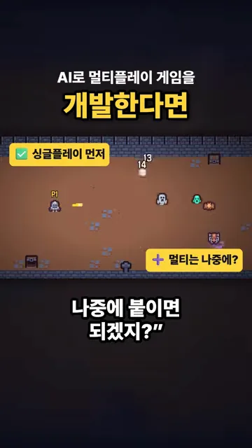
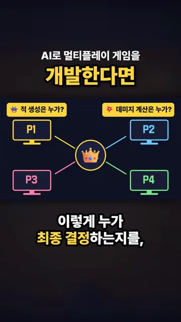
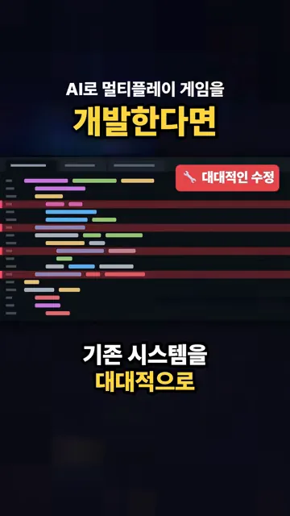
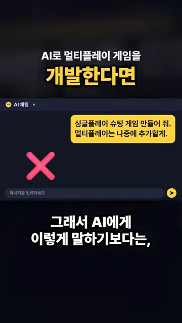
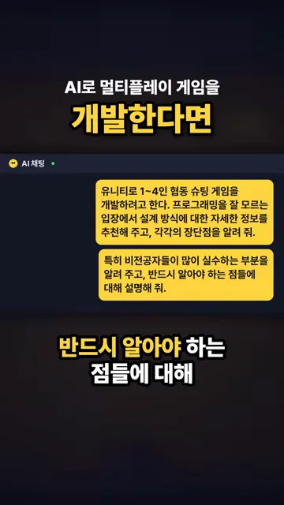
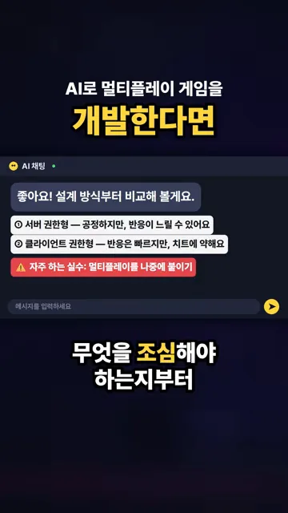
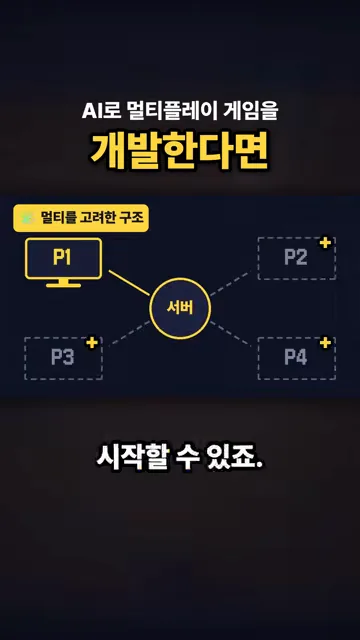

싱글부터 만들면 왜 일이 커질까요?
AI로 멀티플레이 게임을 만들 때 흔히 이렇게 생각해요. 멀티플레이는 어려우니 싱글 플레이부터 끝내고, 멀티는 나중에 붙이자는 거예요. 화면에서도 '싱글플레이 먼저' 표시 옆에 '멀티는 나중에?'라는 물음표가 붙어 있어요.

멀티플레이에는 '누가 정하나'가 따라와요
혼자 하는 게임은 결정하는 쪽이 하나뿐이라 고민할 게 없어요. 네 명이 같이 하면 달라져요. 적을 누가 만들어 내는지, 데미지는 누가 계산하는지 정해야 해요. 아래 그림에서 P1~P4 네 화면이 가운데 왕관 하나로 이어져 있죠. 이 왕관처럼 마지막에 결정하는 자리를 영상은 권한이라고 불러요.

싱글 플레이 코드는 이 질문을 전혀 하지 않고 짜여 있어요. 그래서 처음부터 권한을 생각하지 않았다면, 나중에 멀티를 붙일 때 기존 시스템을 크게 뜯어고쳐야 할 수 있어요. 화면에서 코드 여러 줄이 빨갛게 칠해지고 '대대적인 수정' 꼬리표가 뜨는 장면이 그 얘기예요.

AI에게 설계부터 물어보기
그래서 영상은 AI에게 요청하는 말부터 바꾸라고 해요. 먼저 피해야 할 요청이에요. 채팅창에 '싱글플레이 슈팅 게임 만들어 줘. 멀티플레이는 나중에 추가할게.'라고 적혀 있고, 옆에 빨간 X가 붙어 있어요.

설계부터 물어보는 요청
대신 이렇게 물어봐요. 두 말풍선에 담긴 내용을 나눠 보면 네 가지예요.
- 무엇을 만들지 구체적으로 — Unity로 1~4인 협동 슈팅 게임을 만든다고 밝혀요.
- 내 수준을 알려 주기 — 프로그래밍을 잘 모르는 입장이라고 적어요.
- 코드 말고 설계 방식을 요청 — 설계 방식을 추천하고 각각의 장단점을 알려 달라고 해요.
- 함정을 먼저 묻기 — 비전공자가 많이 하는 실수와 꼭 알아야 할 점을 설명해 달라고 해요.

이렇게 물으면 코드를 짜기 전에 어떤 구조가 있고 무엇을 조심할지부터 알 수 있어요. 영상 속 AI 답변은 두 가지 구조를 견줘요. 서버 권한형은 공정하지만 반응이 느릴 수 있고, 클라이언트 권한형은 반응은 빠르지만 치트에 약하다고 해요. 맨 아래 빨간 줄에는 '자주 하는 실수: 멀티플레이를 나중에 붙이기'가 따로 적혀 있어요.

| 구조 | 좋은 점 | 약한 점 |
|---|---|---|
| 서버 권한형 | 공정해요 | 반응이 느릴 수 있어요 |
| 클라이언트 권한형 | 반응이 빨라요 | 치트에 약해요 |
싱글부터 만들어도 구조는 멀티로
설계를 먼저 정해 두면 싱글 플레이부터 만들어도 괜찮아요. 아래 그림을 보면 P1 하나만 실선이고, P2~P4는 점선 칸에 '+' 표시만 있어요. 가운데에는 처음부터 서버가 자리 잡고 있죠. 지금은 혼자 해도, 나중에 플레이어를 끼워 넣을 자리가 이미 있다는 뜻이에요.

영상의 결론은 이거예요. 설계를 먼저 묻는 게 돌아가는 길 같아도 결국 더 빠른 길이 될 수 있어요.
조금 돌아가는 것 같아도 설계를 먼저 묻는게 결국 더 빠른 길이 될 수 있습니다.
— 영상 00:32